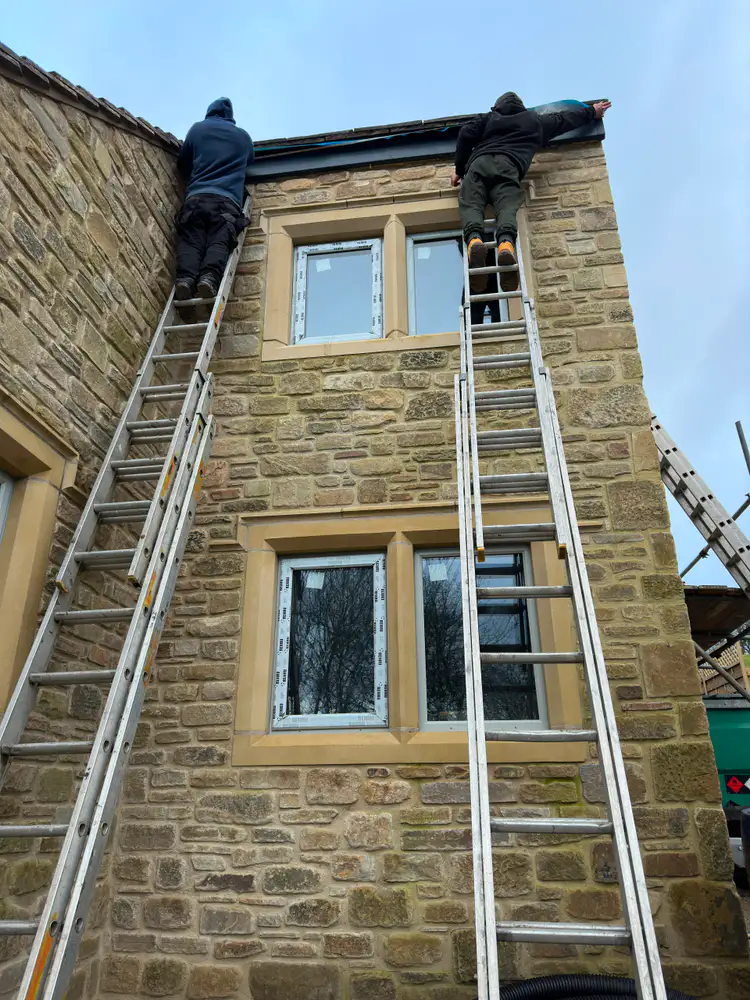

Gutterworx · West Yorkshire
Roof Repairs
Targeted roofing work for leaks, storm damage and roofline defects discovered alongside guttering and fascia projects.
The service
What to expect.
A leaking gutter is not always the only issue at the eaves. Slipped tiles, tired pointing, damaged underlay at the edge or poor previous repairs can all allow water to reach areas it should not. We assess the visible cause and explain the practical repair options.
What is included
- Slipped or broken tile replacement
- Localised leak investigation
- Storm-damage repairs
- Pointing and roof-edge defects
- Roofline faults identified during gutter work
- Clear advice when a wider roofing specialist is needed

Questions
Roof Repairs FAQs.
Do you provide emergency repairs?
Contact us by phone or WhatsApp with photos and your location. Availability depends on existing work and safe access, but we will advise what is possible.
Will you inspect the guttering too?
Yes. Roof and gutter problems often interact, so we look at how water is reaching and leaving the roofline.
Do you offer full re-roofs?
Roofing services can be discussed, although seamless guttering, fascias and soffits remain our main focus. Send details and we will confirm whether the work is in scope.